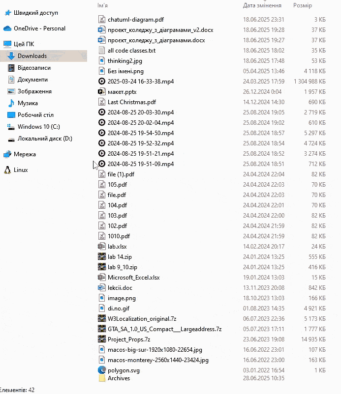
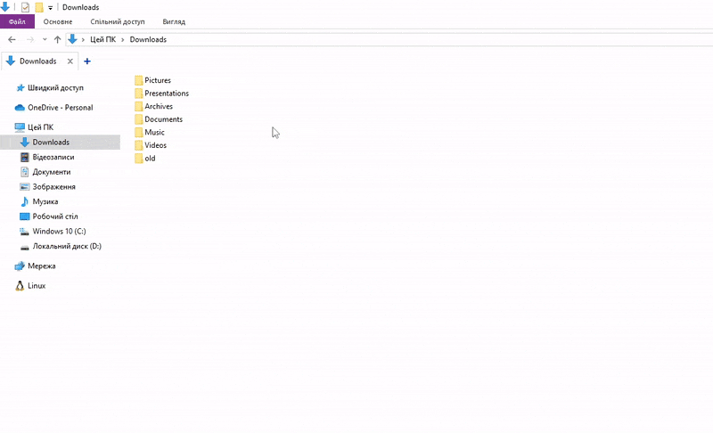

Більше контенту на
https://github.com/vladyslavpukhliak
або https://t.me/adariukov_pukhliak
Пригостити розробника кавою
https://send.monobank.ua/jar/7faVeeX92q
Збір «Чисте небо» благодійного фонду Сергія Притули:
send.monobank.ua/jar/9eLrpTbe4Z

Налаштуйте роботу програми під себе в один клік!
У конфігурацію попередньо вже записані найпопулярніші розширення файлів котрі будуть відсортовані по
відповідним папкам: ~/Documents, ~/Music, ~/Videos, ~/Pictures, ~/Downloads/Archives,
~/Downloads/Presentations.
